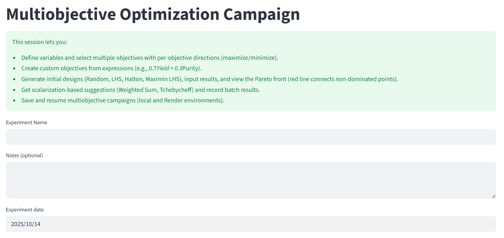
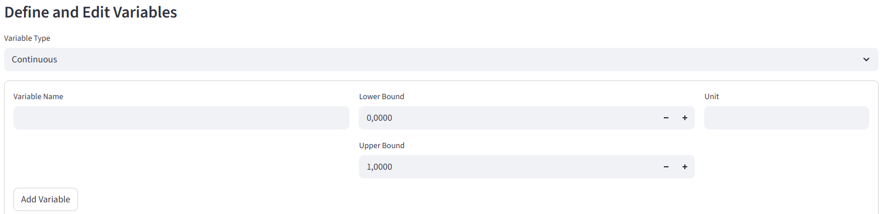
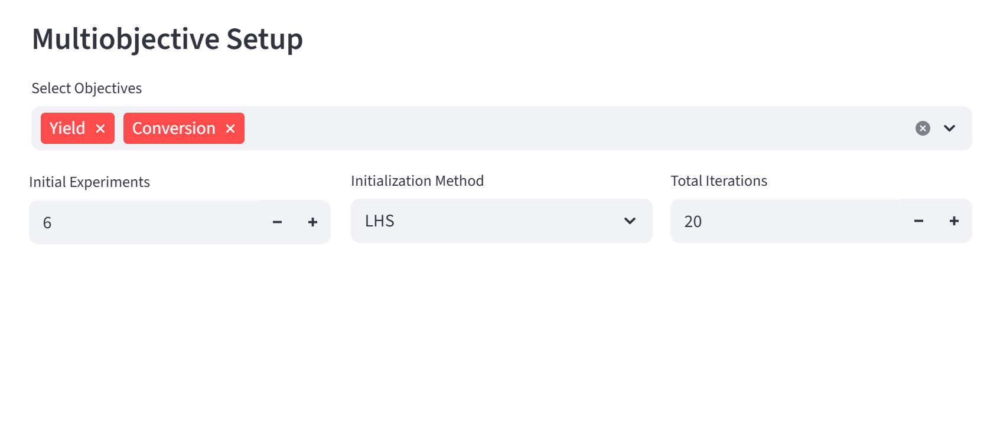

Multiobjective Optimization Campaign — User Guide
This page allows you to define and run a Multiobjective Optimization (MOO) experiment.
A multiobjective optimization problem focuses on finding the best possible trade-offs between two or more objectives (e.g., maximize yield while minimizing cost).
Instead of a single “best” result, MOO produces a set of Pareto-optimal solutions — each representing a different balance between objectives.
What Is a Multiobjecstive Optimization?
In a Multiobjective Optimization, you aim to simultaneously optimize multiple outcomes that may conflict with each other.
Mathematically:
Find x ∈ X such that
f₁(x), f₂(x), …, fₙ(x) are optimized (minimized or maximized)
where:
x – vector of input variables
X – allowed range for each variable
f₁(x), f₂(x) – objective functions (e.g., yield, conversion, selectivity, purity)
The result is not a single optimal point but a Pareto front — a curve (or surface) showing all non-dominated solutions.
Each point on this front represents a valid trade-off between the objectives.
Step-by-Step Guide
1. Define Campaign

Field: Experiment Name
Enter a descriptive name for your experiment (e.g.
Optimization of Reaction Yield and Conversion in Ethyl Acetate Synthesis).Helps identify your campaign when saving or resuming.
Field: Notes
Optional comments or goals for the campaign.
Field: Experiment Date
Automatically filled with the current date (modifiable by clicking inside the field).
Define and Edit Variables
This is where you define the input parameters that the optimizer can change.

Option: Continuous or Categorical
Continuous: Variable can take any numerical value within a range (e.g., temperature = 20–100 °C).
Categorical: Variable can take only specific named options (e.g., catalyst type = {A, B, C}).
Field: Variable Name
Name of your variable (e.g.,
Temperature,Pressure,Catalyst_Loading).
Fields: Lower Bound, Upper Bound
Define the allowed range for the variable.
Example:
Lower Bound =
0Upper Bound =
100
Field: Unit
(Optional) Specify physical unit of the variable (e.g.,
°C,bar,M,V).
Button: Add Variable
Adds the defined variable to your optimization setup.
You can add multiple variables (e.g., Temperature, Pressure, Feed_Ratio).
Edit Variables
To modify a variable later, edit it directly in the table and click “Save Variable Changes”.

Delete Variable
Select a variable from the list and press Delete Variable, then confirm by pressing Save Variable Changes.

Multiobjective Setup
This section defines which objectives will be optimized and how the optimization proceeds.

Field: Select Objectives
Choose one or more objectives for optimization.
Examples:
YieldConversionTransformationProductivityByproductCostTimeE-factorSpace-Time YieldSelectivityPurityMass YieldAtom EconomyCarbon EfficiencyEnergy EfficiencyProcess Mass Intensity
Field: Initial Experiments
Number of initial points used to explore the design space before optimization begins.
Typical range:
3–15
Field: Initialization Method
Defines how initial experimental points are selected:
Random: Uniformly random points within variable ranges.
LHS (Latin Hypercube Sampling): Ensures better coverage of the parameter space.
Halton Sequence: Low-discrepancy sampling for smoother coverage.
Maximin LHS: Maximizes minimum distance between points.
Field: Total Iterations
Number of optimization cycles to run after initialization (e.g.,
20or50).
Field: Initial experiments
Objective Directions

For each objective, define whether it should be maximized or minimized:
Suggest Initial Experiments
Button: Suggest Initial Experiments
Generates initial experimental points based on selected objectives and variable ranges.
The points are distributed according to the chosen initialization method (Random, LHS, etc.).
These points form the starting dataset for optimization.
Optimization Process Summary
Define variables and their bounds.
Select objectives and set their optimization directions.
Choose initialization method and number of initial experiments.
Set total number of iterations.
Generate initial experiments.
Run optimization to explore the Pareto front.
Example Setup
TO DO: screenshot
Goal: Maximize yield and conversion while minimizing reaction time.
Variable |
Lower Bound |
Upper Bound |
Unit |
|---|---|---|---|
Temperature |
40 |
120 |
°C |
Pressure |
1 |
5 |
bar |
Catalyst_Loading |
0.1 |
1.0 |
g |
Objectives:
Maximize
YieldMaximize
ConversionMinimize
Reaction Time
Initialization Method: LHS
Initial Experiments: 6
Total Iterations: 25
Tips
Each additional objective increases computational complexity — start with 2 or 3.
Always check units and bounds to avoid invalid inputs.
Default choices if unsure:
Initialization: LHS
Objective Direction: Maximize
Use Pareto plots to visually interpret trade-offs between objectives.
Troubleshooting
TO DO: Possible problems?
Common issues include:
Output
After completion, you obtain:
TO DO
Glossary of Key Terms
Term |
Meaning |
|---|---|
Variable |
Input parameter that can be adjusted (e.g., temperature, feed ratio). |
Objective Function |
Quantity to be optimized (e.g., yield, cost, purity). |
Pareto Front |
Set of optimal trade-offs where improving one objective worsens another. |
Initialization Method |
How initial experiments are distributed. |
Iteration |
One optimization cycle updating the model. |
Non-Dominated Solution |
A result not worse than any other in all objectives. |
Custom Objective |
User-defined combination of existing objectives. |
Acquisition Strategy |
Rule for selecting new experimental points (e.g., Expected Improvement). |